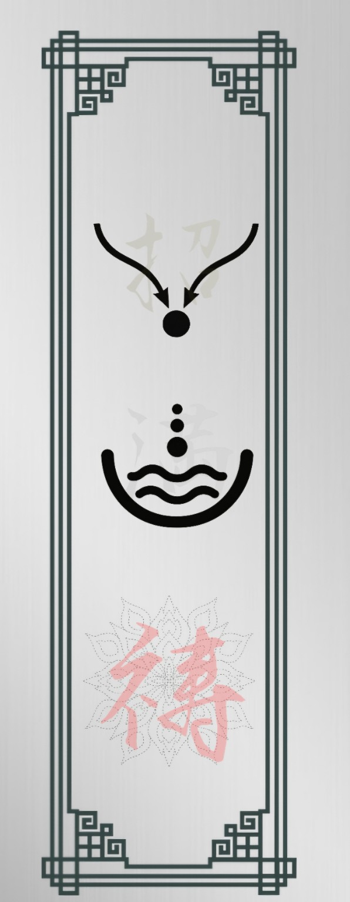
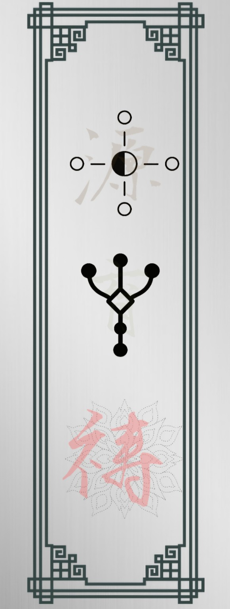
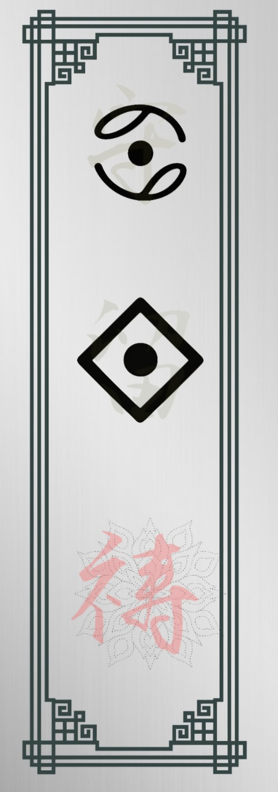

PROTECT
暮らしが守られる護符
守・留・祷
今ある暮らしや大切なものを守り、必要な余力が自分のもとにも留まる流れを願います。
失わず、崩さず、必要なものがきちんと残ることを願う護符です。
JIKOU / WEALTH CHARMS
豊かさは、ただお金が増えることだけではありません。守ること、育てること、必要なものが満ちること。それぞれの流れに願いを置く、時光の固定護符です。

PROTECT
守・留・祷
今ある暮らしや大切なものを守り、必要な余力が自分のもとにも留まる流れを願います。
失わず、崩さず、必要なものがきちんと残ることを願う護符です。

GROW
源・育・祷
すでに持っている知識・技術・経験・縁などを活かし、磨き育てていく流れを願います。
今あるものが眠ったまま終わらず、時間とともに価値を増していくことを願う護符です。

FILL
招・満・祷
必要なものが自分へ届く入口がつながり、それが暮らしや自分自身に行き渡る流れを願います。
必要なものが届き、自分にとっての「十分」が満ちていくことを願う護符です。
個別護符は、無料の「あなたの金運の巡り方診断」の結果をもとに、今細くなっている流れと、あなたが目指す豊かさを見ながら、3つの作用を一人ずつ選んで仕立てる予定です。固定護符とは異なり、最後に朱の「禄」の印を結びます。こちらは有料となり、現物を郵送する護符となります。
個別護符は現在準備中です。